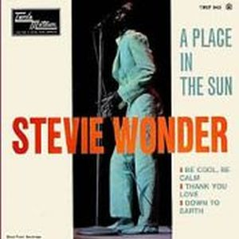

Down To Earth, pese a no tener un gran progreso comercial, si lo tuvo desde el punto de vista artístico. Su evolución personal intuye la futura transformación de su voz, poniendo las bases para las futuras obras de los años 70 de gran trascendencia musical. Mezcla melodías Motown soul, con otras de estilo más pop, pudiendose encontrar buenas canciones como "Sylvia", "Thank You Love", "My World Is Empty Without You", y la dulce "Hey love".
De nuevo vuelve a utilizar una canción de Bob Dylan, "Mr Tambourine Man", al igual que otra del famoso equipo de la Motown, Dozier, Holland, Holland, en el tema "My World Is Empty Without You". Contribuyendo Stevie Wonder en la obra creativa junto a Cosby y Moy en varias de las composiciones.
